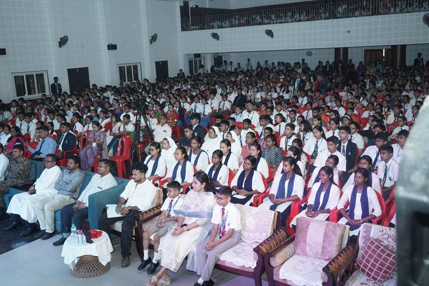
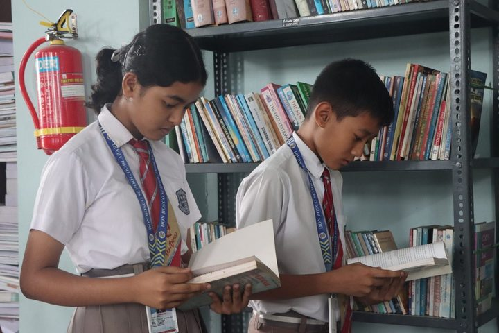
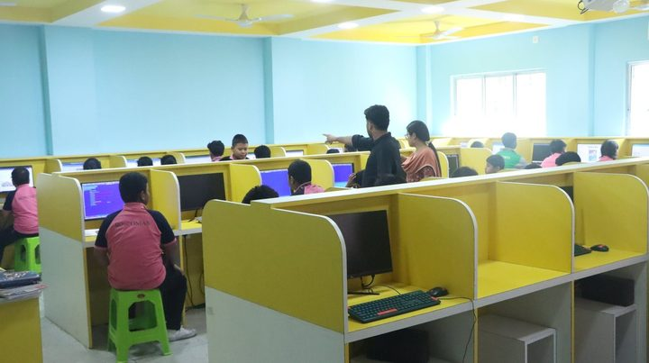
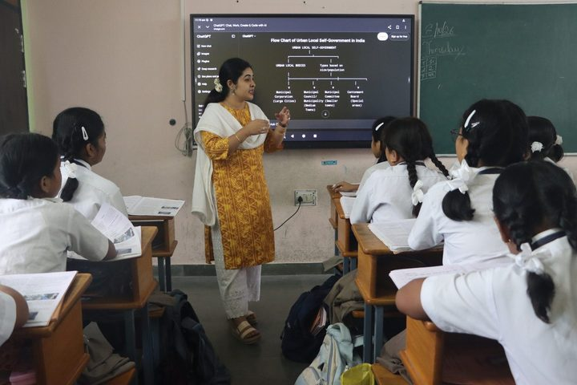
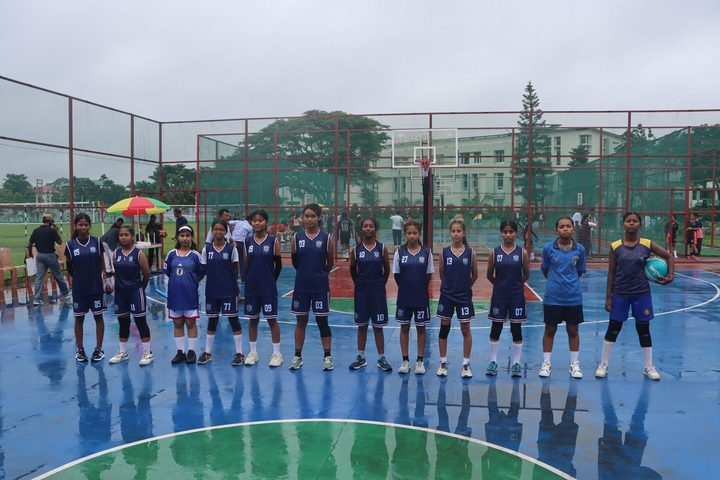
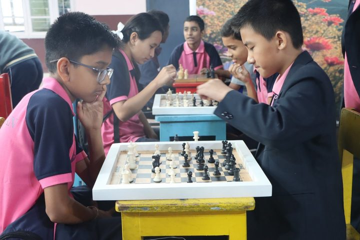
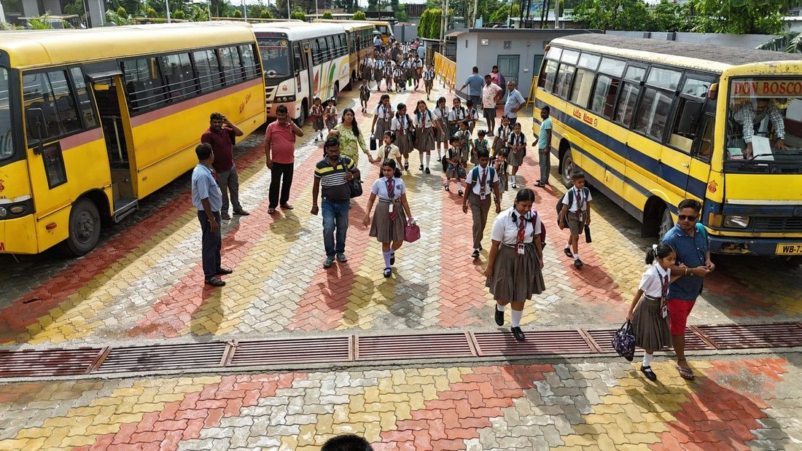

Auditorium
Seats 1,500. Assemblies, celebrations, felicitations and the annual events of school life gather here.
Every photograph on this page is the school's own. Where no photograph exists, the page says so plainly.

Seats 1,500. Assemblies, celebrations, felicitations and the annual events of school life gather here.

A reading room where students browse, borrow and sit with a book. Reading is part of the school week.

Computer Science is taught hands-on, at the keyboard, from the early classes to the ISC years.

Interactive displays bring lessons alive, with audio-visual rooms supporting teaching across subjects.

Practical sessions in the labs build the confidence that theory alone cannot give.

A green, open campus in the Dooars, with a children's park, the Bosco Arcade and security across the grounds.
Football fields, cricket pitches, and badminton, basketball and volleyball courts, with indoor carrom, chess and table tennis.



Sports at the school include football, cricket, volleyball, basketball, kabaddi and badminton, plus the biennial Sports Day. See Life at Bosco for the full picture.

The school runs yellow school buses across the surrounding areas. For routes, stops and charges, please contact the school office directly, as route details are not published on the website.
The school lists science laboratories among its facilities. No photograph of the science laboratories is published on the school's website or social pages, so this page shows none rather than presenting a photograph from elsewhere as the school's own. Photographs can be added here when the school provides them.
Admissions are open for UKG and Class XI. Forms close 10 December 2026.